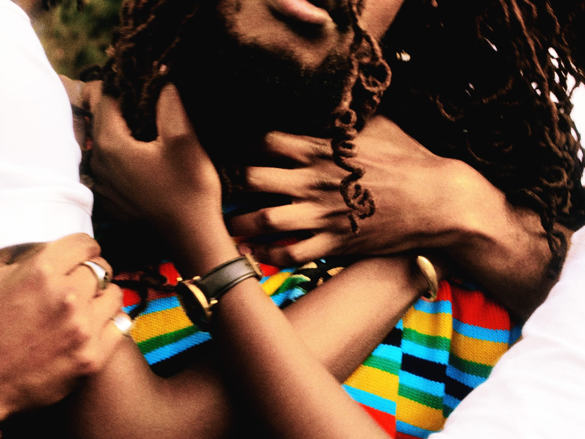

Art & Culture Projects
mau from nowhere


Worked with mau from nowhere to develop and strengthen his artistic identity, positioning and career direction across music, live performance and creative partnerships. Alongside co-creating broader release and career strategies, I supported the artist through key project cycles, seeing through the rollout of the collaborative album PRESSURE with hihi, including its live listening show, as well as the rollout of the EP mo(u)rning pages and its listening party at Canteen, which I co-produced. I also worked closely with the distributor and wider industry partners to coordinate releases and build the infrastructure around each project, helping translate mau’s creative vision into cohesive campaigns, experiences and longer-term opportunities.
- RoleArtist Managent / Development
- FocusCreative direction, strategy, partnerships
- Wrapped2026